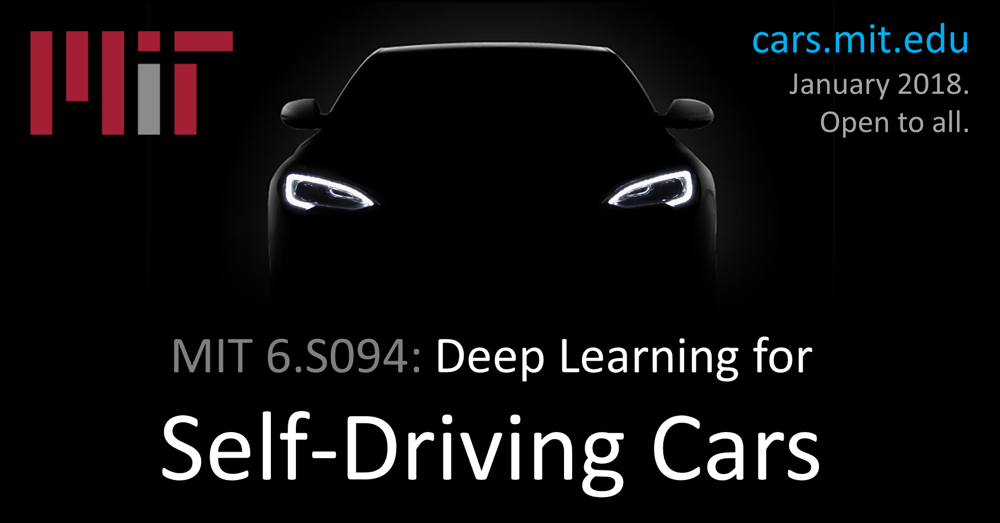
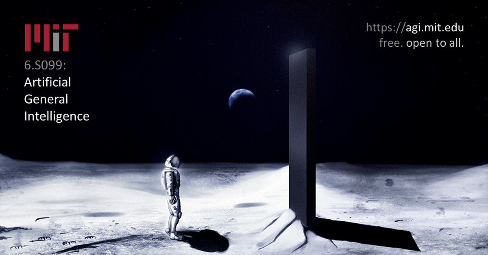

Li Ding | 丁立
I'm currently a Research Engineer at MIT, working on deep learning for scene perception and vision-based control of autonomous vehicles. Our research (involving Dr. Lex Fridman and colleagues) focuses on Human-Centered Artificial Intelligence (HCAI) that leverages human knowledge to enhance machine intelligence.
I TAed MIT 6.S094: Deep Learning for Self-Driving Cars (Jan. 2018) & MIT 6.S099: Artificial General Intelligence (Feb. 2018). If you have questions regarding the courses, please email us via deepcars [at] mit.edu / agi [at] mit.edu, respectively.
Prior to joining MIT, I was a Research Associate at University of Rochester (Dept. of Computer Science) after graduating with M.S. in Data Science. I did research on human action recognition with Prof. Chenliang Xu.
I'm from Shanghai, China. On a side of fun, I'm a casual Kaggler interested in playing with various kinds of data. I like photography, art, electro-funk, all kinds of cuisine, and at the moment, traveling around with Pokémon Go.

Research
Ongoing
End-to-end Steering Control
Driving Scene Perception
Neural Art Synthesis
Dynamic Scene and Optical Flow
Past
Weakly Supervised Action Localization

Edge Cases in Image Recognition

Publication

MIT Autonomous Vehicle Technology Study: Large-Scale Deep Learning Based Analysis of Driver Behavior and Interaction
with Automation
Lex Fridman, Daniel E. Brown, Michael Glazer, William Angell, Spencer Dodd, Benedikt Jenik, Jack Terwilliger,
Julia Kindelsberger,
Li Ding, Sean Seaman, Hillary Abraham, Alea Mehler, Andrew Sipperley, Anthony Pettinato, Bobbie Seppelt, Linda
Angell, Bruce Mehler, Bryan Reimer
[pdf]
[arXiv]

Service
TA
(Winter 2018)

(Winter 2018)

Reviewer
IEEE Transactions on Circuits and Systems for Video Technology (2018)
IEEE Access (2018)
Kaggle
Level:
 Competitions Expert (highest rank: 1169th |
current rank)
Competitions Expert (highest rank: 1169th |
current rank)
Statoil/C-CORE Challenge
(Satellite Image Classification)
 · 2018
· Top 6%
· 2018
· Top 6%

Data Science Bowl 2017
(Lung Cancer Detection)
· 2017
· Top 6%

Thanks for visiting!